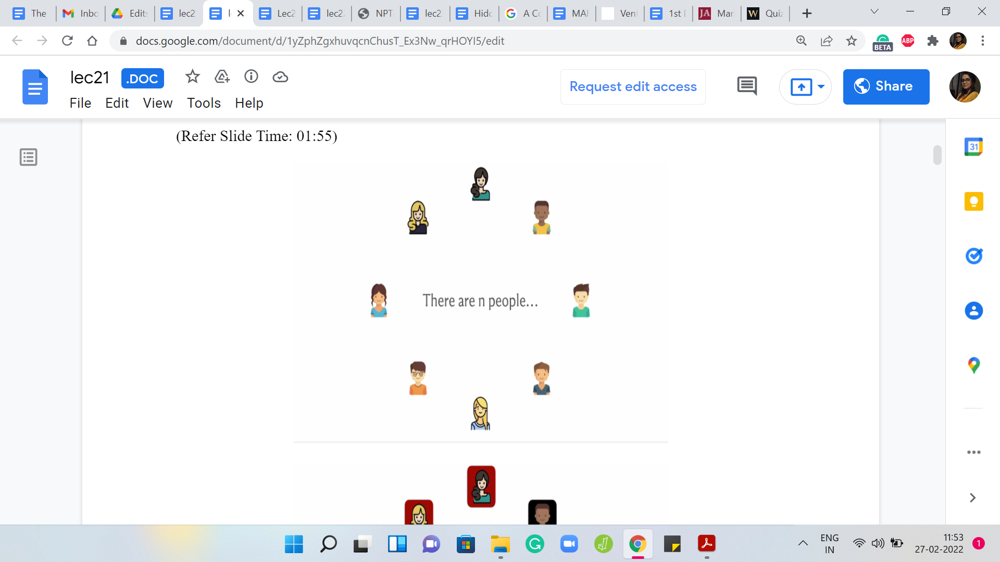
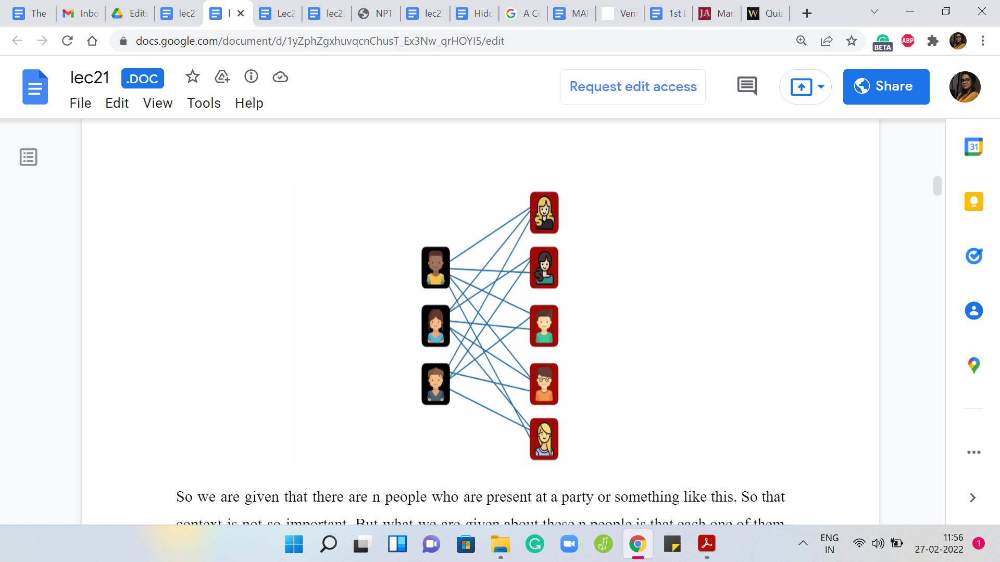
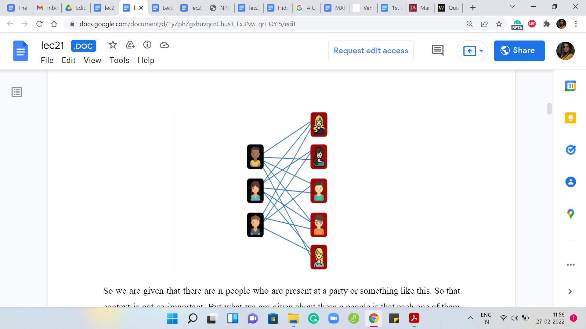
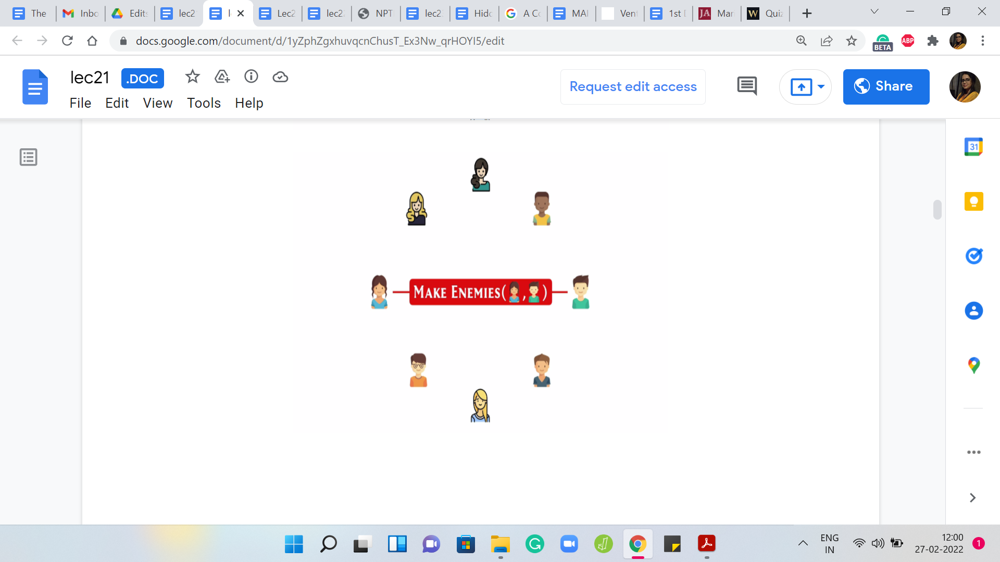
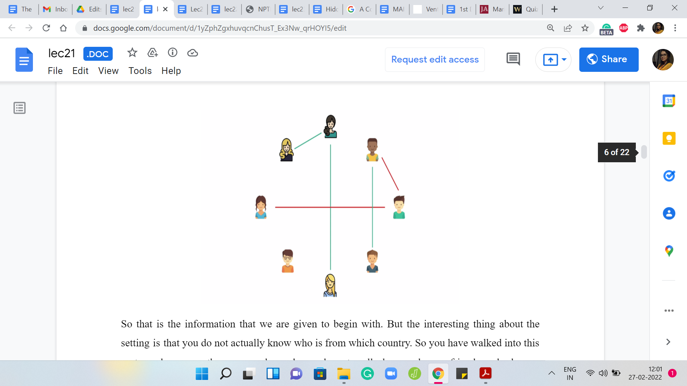
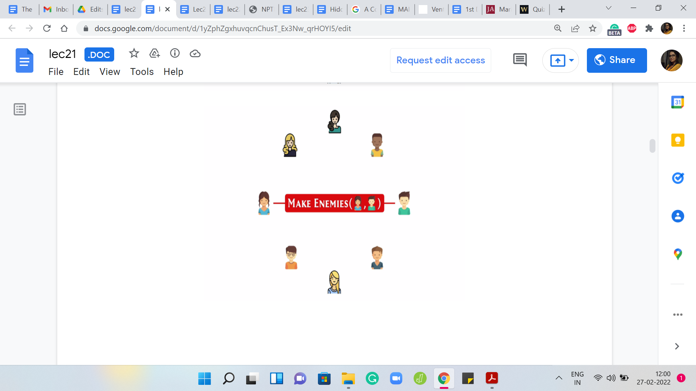
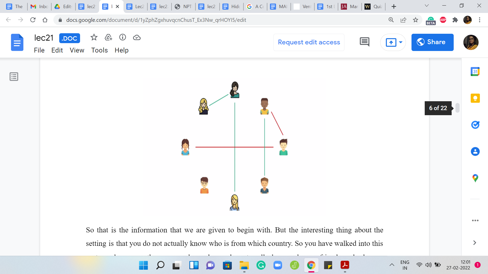
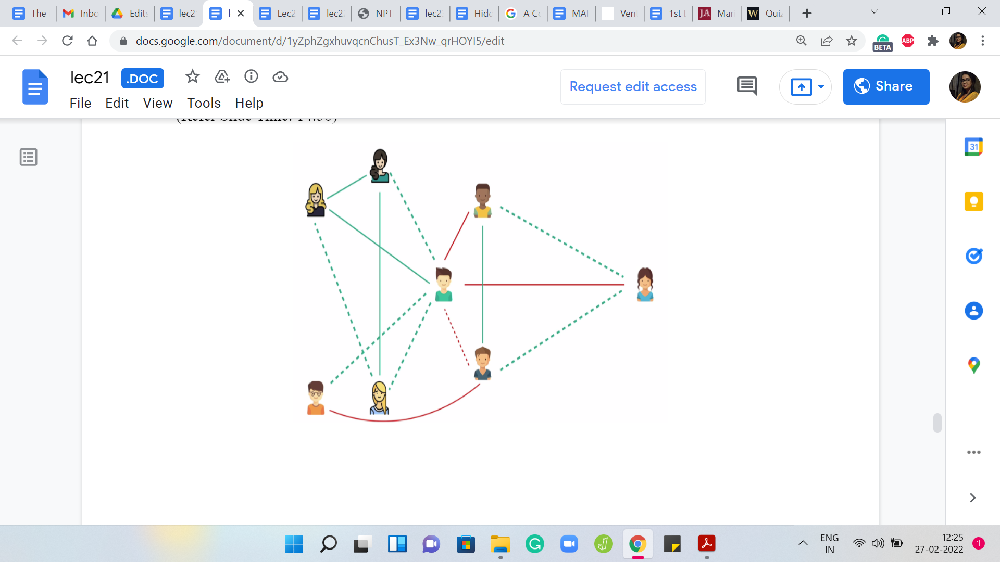
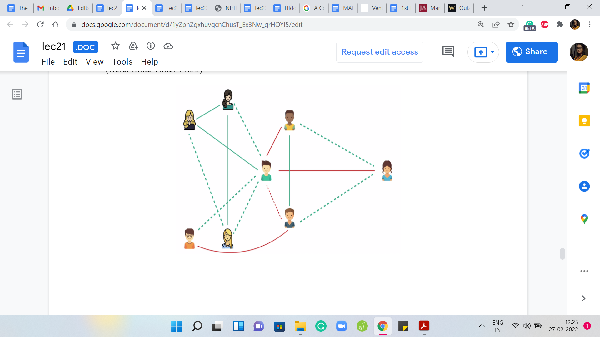

M 3 (War-I)
Lecture - 21
Disjoint Set Union - Module 3 (War-I)
(Refer Slide Time: 00:11)

Hello, and welcome to the third and the final module in the fourth week of Getting Started with Competitive Programming. As you know, this week, we have been talking about applications of the Disjoint Set Union data structure. As our final example, I want to talk about a problem called ‘War.’ You can find this on the UVA online judge. The problem ID is 10158.
But you do not really need to remember that because, as usual, a link to the problem statement is in the description of this video. This problem is also available on a platform called UDBug, where you can find additional test cases and hints and things like that. The link to that is provided in the description as well. Do check it out. Now, this problem has several things going on. Apart from an interesting story, there are a few different concepts to keep track of.
You might find that the description is a bit longer than usual. In fact, I think in terms of just the number of lines in the code for the solution to this problem, this is probably the longest that we have seen. Actually, conceptually, it is a really clean problem once you get the hang of it. But I will say that it is a bit non-trivial. It takes some time to fully absorb all the moving parts and all the cases that are involved.
Please be patient with this. It might take you some time before you can write everything out, especially if you like to write the solution out yourself before you follow along. Give yourself some time to make sure that you get all of the scenarios pinned down correctly. With that said, let us begin as always by taking a look at the problem statement.
(Refer Slide Time: 01:55)
 

 

We are given that there are ‘n’ people who are present at a party or something like this. That context is not so important. But what we are given about these ‘n’ people is that each one of them belongs to one of two countries. People who are from the same country - so here I have coded the two countries with a maroon-and-black background - so for people who are from the same country, they are all friends with each other.
Here we have a group of five mutual friends on the one hand, and then three mutual friends on the other hand. Using the terminology from the problem statement, people who are from different countries, so if you pick any pair of people who come from different countries, we think of them as being enemies. Now, that is a pretty strong word. I might just call them rivals instead. We have these friends, and we have rivals.
(Refer Slide Time: 02:55)
  
 
That is the information that we are given, to begin with. But the interesting thing about the setting is that you do not actually know who is from which country. You have walked into this party and you see these ‘n’ people, and you do not really know who are friends and who are enemies and so on. The story goes that by observing people’s behavior at this party, by looking at how they are talking to each other, how they are interacting, and so on - who is getting into a fistfight? Who is exchanging pleasantries? - you can figure out, or you can make a pretty good guess about which pairs of people are friends and which pairs are enemies. Of course, you do not get to know all of this upfront; you have to spend some time at the party to infer more and more information. The way this is given to us is that as you spend time and you start inferring this information, you sort of make a record of it in your notebook or whatever.
Let us say that you observe two people who are hanging out and having a good time. Then you decide to make a note of the fact that they are friends. This is given to you in the form of a query. You should not call this so much a query because it is not asking you for an answer. But this is something you can think of more as an operation. You just make a note of the fact that these two people are friends.
This is something that will actually come through in your input. Your input is going to be a sequence of, you can think of them as a mix of, these commands and queries. We will come back to the queries a bit later. But the operations are essentially going to be either MAKE FRIENDS or MAKE ENEMIES, which is the operation that comes in when you observe that there are two people who are very likely to be enemies.
So both MAKE FRIENDS and MAKE ENEMIES come with the IDs of two people on whom you want to impose either this friendship structure or this rivalry relationship. As you continue to spend time at this party, you start building up your observations. Let us say you note them down. Whenever you see two people, and you are convinced that they are friends, you make a note of that. If you are convinced they are enemies, you make a note of that as well.
Formally, of course, the way this works out is that you are given a series of these MAKE FRIENDS and MAKE ENEMIES operations as input. You could just put them on the record as you go along. Let us say these are some of the relationships that you have been able to figure out by direct observation.
(Refer Slide Time: 05:41)


Now, if you remember, what we said earlier is that there is this friendship and rivalry structure or network that we know exists among these people. Essentially, what is happening is that as you spend more and more time as a neutral, third-party observer, it is like you are building out parts of this picture.
You do not know this picture but it is like a few pieces of a jigsaw puzzle have been given to you, and you are trying to piece them together, and hopefully, eventually build up the complete picture as you go along. So far, though, all the information that you have built up is from your direct observations. An interesting aspect of this problem is that you can also build up a little bit of information from indirect inferences.
Maybe you have not observed a pair of people directly, but you can draw some conclusions about them based on the other information that you have. The way that you can do this is driven by the fact that these friendship and rivalry relationships, because of the way they are, are driven by certain rules. There are basically three rules that we need to keep in mind and see how we can use them to draw these additional inferences. Let us go through these rules.
(Refer Slide Time: 06:59)


The first one is that friendship is transitive. What I mean by this is that if A is a friend of B, and B is a friend of C, then A is also a friend of C. Notice that this behavior is not really very intuitive in the sense that if you are thinking about friendships as in Facebook friendships, for instance, you do not really see transitivity.
For instance, if you have a friend, just because this person is your friend, you do not automatically become friends with everybody that this person is friends with. However, that is the case in the context of the story that we have in this problem. Let us just keep this in mind and take a look at our example.
See if we can infer any new friendships here by an application of this rule. Remember, the rule simply says that the friends of my friends are also my friends, which is to say, if we apply it to a specific people, let us say A is friends with B, and B is friends with C, then that implies that A is friends with C as well. Can you apply this to some three people in this picture and infer a new relationship? This would be a good time to pause and try and confirm this for yourself.
Hopefully, you have also discovered at least this one new relationship that you can establish between two people because they are in this chain situation that I just described. This is one way of applying the first rule of friendship. I do not think there are any more inferences that we can draw just based on this rule.
(Refer Slide Time: 08:44)


Let us move on to the second rule which says that if you have a common enemy, then that makes two people friends. If you know that A is an enemy of B, and A is also an enemy of C, in that situation B and C have a good reason to be friends with each other because of this common enemy. Again, let us go back to the example that we have been looking at. Take a pause here and see if you can develop or infer any new relationships based on the second rule.
Once again, the second rule says that a common enemy makes two people friends. Can you find two people who have a common enemy? You can probably discover that you can infer a new friendship between these two people here because they have a common enemy in the person who is the rightmost person on your screen right now.
I do not think there are any more inferences that you can make based on this rule because there are just two rivalry relationships that you have so far. Let us move on and talk about the third role connecting friends and rivals.
(Refer Slide Time: 09:58)


The third rule, which I think is also a popular saying is that an enemy of a friend is an enemy. Notice that this is distinct from the previous situation. In the previous rule, what we said is that a common enemy makes two people friends. These are two people who, at least as far as we were concerned, were strangers. But let us say they have a chat, and they realize that they both have the same rival, then that becomes a reason for them to become friends.
Here, however, you have two people who are already friends. One of them, let us say, realizes that the other person has an enemy, then this person is going to declare a rivalry with the rival of his friend because that is just how this rule works. If you are my friend and you have a rival, that person becomes my rival as well. Let us see how this rule plays out in our example.
Take a look here and see if you can draw any new conclusions based on this third rule. Once again, remember, the third rule says that an enemy of a friend is an enemy. If you need to please pause here and try to figure out if you can apply this rule. We do have a situation where someone has a friend who has an enemy.
You can see this playing out on sort of the bottom right corner of this picture. That is definitely one extra rivalry that you can deduce from the picture that you had built up so far. Now just take a look at this picture once again, and see if you can infer anything new based on what you have so far, especially after this last relationship was added.
Was there anything new that can be concluded by applying one of the rules that we have discussed so far? You might spot that, here are two people who now have a common enemy. Because they have a common enemy, the second rule comes into play and they become friends. That is the picture that we have so far.
(Refer Slide Time: 12:19)


Let us just move things around so that this is a bit clearer to see. It is the exact same picture, which is the pieces adjusted a little bit. I think hopefully it is at least visually clear that at this point you have a dead-end in terms of indirect inferences based on the rules that we have discussed so far.
Let us actually turn this around so that it is easier for me to draw the next connection that I want to draw. Suppose you have a MAKE FRIENDS operation, and this is a new direct observation. Let us say that you make friends between these two people here. Then you can probably guess that by applying the first rule of friendship, which is that your friends are my friends, you can actually infer these two new friendships in this picture. But that is not all.
You can actually say more based on one of the other rules. Can you think of any other relationships that you can derive from the three rules that we have seen before? Take a pause here and think about it. Remember that we said that if you are my friend and you have a rival, then that person is also my rival. This was the third rule. Based on that, notice that if you pick any one of the people who are in a yellow circle and any person who is in a blue circle, then they are going to be mutual rivals for this reason.
By the way, I should have mentioned this explicitly, but friendship and rivalry are always assumed to be mutual. It is never a one-sided relationship. That is also something that we are given. Let us not add these rivalries explicitly to this picture because it is going to make it crowded. But notice that there is one person who is kind of isolated from the rest of the picture that we have built so far.
(Refer Slide Time: 14:16)
 

Let us say that we make a direct inference or direct observation about a rivalry between the person on the bottom-left of your screen and this person who sits in the component on the right. What does this direct observation tell us? Can we infer something more from here? If you remember, we said that if two people have a common enemy, then they themselves become friends. You can probably identify here that these two people do have a common enemy.
You can infer this new friendship here. From this new friendship, you can infer many more friendships, and I leave it as an exercise for you to build out the rest of this picture. Fill in the remaining blanks and see if there is anything that still remains to be inferred if you need more direct observations to build up the whole picture. Or, are you really done from here?
Do think about that when you have a chance. But in the meantime, let us move on to actually describe the task that we are supposed to perform. With all this background in place, I think we are ready to understand what we are supposed to do.
(Refer Slide Time: 15:29)

The input is going to be a stream of queries. Some of these are actual queries, while the others are really operations or information about these direct observations. We have seen two of these already. You have: MAKE FRIENDS and MAKE ENEMIES. But apart from these, you will also get queries of the form ARE FRIENDS? and ARE ENEMIES?
For these latter two queries, you are expected to output ‘yes’ or ‘no,’ based on the information that you have so far. For example, if you are asked if P and Q are friends, then you are supposed to say ‘yes,’ if you have evidence that they are friends, either from our direct observation or by inference, and you can say ‘no’ otherwise. As you might expect, it is similar to the ‘ARE ENEMIES?’ query.
If you are asked if P and Q are enemies, you are supposed to say ‘yes,’ if you can deduce that they are enemies, either by direct observation or by some sort of inference. If this is not the case, then you say ‘no.’ Your task really boils down to keeping track of this picture, the one that we were building up like in the example before, as you get these MAKE FRIENDS and MAKE ENEMIES operations.
Of course, the important thing is that you do not just make a note of the direct observations, you somehow want to also track all of the inferences, all of the implications that come out of applications of rules, 1, 2, and 3. Remember, the first rule was that all friends of my friend are my friends as well - friendship is transitive. The second rule was that if two people have a common rival, then they become friends.
The third rule was that if my friend has a rival, then that person is my rival as well. You want to apply these rules as much as you can to actually infer additional relationships to be able to come up with accurate answers to the ‘ARE FRIENDS?’ and ‘ARE ENEMIES?’ queries, which is really the crux of what is going on here. Let us also point out a little bit of Fineprint, which I think is important.
(Refer Slide Time: 17:40)

You might actually get ‘makeFriends’ or ‘makeEnemies’ queries, which contradict your previous knowledge. This could be as simple as the first line of input saying ‘makeFriends 1 comma 2,’ and the second line of input saying ‘makeEnemies 1 comma 2.’ This, of course, is a very direct example of contradictory behavior. But you could also have operations, which contradict the knowledge that you have gained so far by inference.
Even if these indirect conclusions are contradicted, you are supposed to ignore these commands, or you are supposed to ignore these operations. Here is how this works. Whenever a makeFriends or makeEnemies operation does not contradict your previous knowledge, but it just adds to the picture that you are building, then you might do all this background work of making note of this information and drawing inferences and all of that. But you do not have to do anything in terms of output.
So you produce nothing as output for the valid makeFriends and makeEnemies queries. But on the other hand, if you receive a query that contradicts your previous knowledge, then you output -1 to make a note of the fact that you encountered a contradiction, but you move on as if nothing has happened. You simply ignore this query in the context of the picture that you are building.
That is how the problem works in terms of the input and the expected output. Now, we really have to think about coming up with a solution. Of course, you could try to brute force emulate everything. You could add this information. You could go over all pairs or triples, whatever it takes to exhaustively examine the impact of the three rules of friendships and rivalries that we discussed. But you can quickly see that that is going to be too expensive.
We do need to do something smarter. Where do Disjoint Sets come into this picture? It is reasonably intuitive to think that the friendship relationship can be modeled using disjoint sets. Because of the fact that they are transitive, it would make sense to say that the friendships evolve in these clusters.
Whenever two people from two different clusters are identified as friends, it makes sense to just mash the two clusters together. Because transitivity will imply that now everyone in the first cluster will become friends with everyone in the second cluster. So I think it is pretty natural to use disjoint sets to keep track of friendships.
(Refer Slide Time: 20:28)

But the real question is: how do you keep track of the enemies? That is some extra information that you do need to carry along. You need to find some way for making room for this extra baggage in your disjoint sets data structure. Now, there are multiple approaches to this problem, and we will be describing a specific one, but I think it is really worth taking a break here and seeing if you can puzzle this out for yourself. I think it is a really cute puzzle to work with.
Just give it a shot. Join me back in the next part of this module. In the next video, we will talk about a complete solution to the problem, which involves using disjoint sets for the friendships and a little bit of extra book-keeping, and some case analysis to carefully track the enemies. I will see you there!